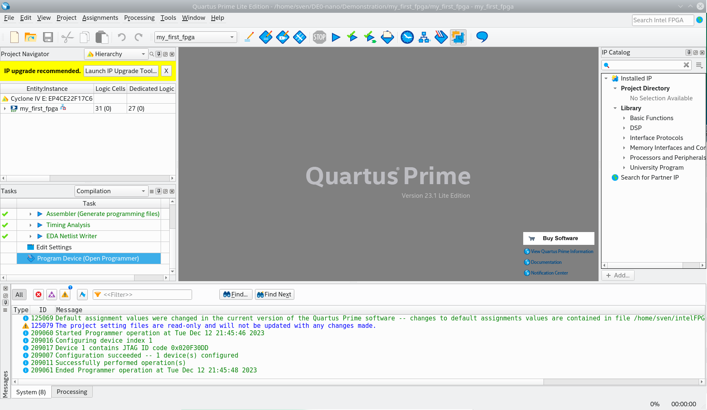

Today I want to start a blog post series about hardware programming. We start with an introduction to hardware programming with the FPGA-board DE0 Nano from former Altera now Intel. You see a picture of the small board below. It seems you can still order this board, but I have not tested.

We will show how to setup the environment, in the first step we will (show how to) download and install quartus on a Debian distribution, and configure the programmer. In the second step we will install the simulation software Modelsim.
Quartus IDE
The installer can be found here. After accepting the license agreement the 60Mb big quartus installer will be downloaded. In the shell console cd to Downloads and change the permissions, making it executable, and execute it
$ cd ~/Downloads
$ chmod +x ./qinst-lite-linux-23.1std-991.run
$ ./qinst-lite-linux-23.1std-991.runThe installer GUI opens and you get to select the according packages. Do select the packages as shown below (on this system its already installed): Please check that you have around 20GB disk space free on the partition where you want to install the software, download size is around 4.4 - 5.0 GB.

Then, click the download. The download and installation takes a bit of time, so get a cup of coffee in between. After installation finished in your console go to the installation - you have it probably installed in your home directory or under /opt - and execute the shell command to start quartus - or simply click on the Desktop icon.
$ cd intelFPGA_lite/23.1std/quartus/bin/
$ ./quartus
Now it is time to take the CD from the DE-0 nano board and copy its content on your computer… Or simply download it from here. (You have to registrate yourself).
After copying, open the project my_first_fpga. You see the different code parts in the project view left.
This tutorial is in detail documented in the De0-Nano user manual page 40 - page 80 DE0-nano User Manual
To quote the user manual (p.44): Create a design that causes LEDs on the development board to blink at two distinct rates. This design is easy to create and gives you visual feedback that the design works. Of course, you can use your DE0-Nano board to run other designs as well. For the LED design, you will write Verilog HDL code for a simple 32-bit counter, add a phase-locked loop (PLL) megafunction as the clock source, and add a 2-input multiplexer megafunction. When the design is running on the board, you can press an input switch to multiplex the counter bits that drive the output LEDs.

The view below shows the quartus block design file (bdf) for the simple project my_first_fpga. Its depicting a PLL Megafunction and (bus) Multiplexer Megafunction which is IP (=Intellectual Property from Altera / Intel). And then there is a verilog file containing our custom counter logic as shown below.

//It has a single clock input and a 32-bit output port
module simple_counter (
CLOCK_50,
counter_out
);
input CLOCK_50 ;
output [31:0] counter_out;
reg [31:0] counter_out;
always @ (posedge CLOCK_50) // on positive clock edge
begin
counter_out <= #1 counter_out + 1;// increment counter
end
endmodule // end of module counter
And to check the pin assignment,we open Assignments >> Pin Planner
Now we can run the Compiler - which in hardware programming is a bit different from software compilers - but we get to that in another blog post.
We can see in the compile report that 1 of 4 PLLs in total is used. Otherwise we use less than 1 percent of resources.
Before we can programm the board first we have to configure the usb settings of our distribution, as documented here.
According to 'Driver Setup on RedHat Linux Enterprise 5 and Above' which is also valid for Debian Buster / Bullseye, as root user we create a new file /etc/udev/rules.d/51-usbblaster.rules
# Intel FPGA Download Cable
SUBSYSTEM=="usb", ATTR{idVendor}=="09fb", ATTR{idProduct}=="6001", MODE="0666"
SUBSYSTEM=="usb", ATTR{idVendor}=="09fb", ATTR{idProduct}=="6002", MODE="0666"
SUBSYSTEM=="usb", ATTR{idVendor}=="09fb", ATTR{idProduct}=="6003", MODE="0666"
# Intel FPGA Download Cable II
SUBSYSTEM=="usb", ATTR{idVendor}=="09fb", ATTR{idProduct}=="6010", MODE="0666"
SUBSYSTEM=="usb", ATTR{idVendor}=="09fb", ATTR{idProduct}=="6810", MODE="0666"
Then we need to exit quartus and restart the computer, plug the usb cable from terasic in and connect it to your board.
Then, do the following as described here.
-
Start the Quartus® II software.
-
Choose Programmer from the Tools menu. The Programmer window will open.
-
Click the Hardware Setup… button to open the Hardware Setup window.
-
The selected programming hardware is identified as Currently Selected Hardware. Programming hardware that is already set up appears in the Available hardware items window.
-
Click the Add Hardware button to open the Add Hardware window if the programming hardware you would like to use is not listed in the Available hardware items window.
-
Select the appropriate programming cable or programming hardware from the Hardware Type list.
-
Select the appropriate port and baud rate if necessary.
-
Click OK.
-
Select the programming hardware you would like to use by choosing it in the Available hardware items list.
-
Click Close.
-
Your programming hardware has been set up. (For detailed information about how to program Intel FPGA devices, refer to Quartus II Help.)
Now, you can program the board with the given sof (sram object file). As the title sram suggest, this is a volatile programming which is lost after power supply is gone.
We are still missing an important piece of software, which is the simulation software modelsim. We show this in the future
Modelsim
The download link for Modelsim for quartus is given here .
To install Modelsim on a debian system some 32 bit libraries have to be installed to.
For Ubuntu and Debian the commands are as follows:
$ sudo dpkg --add-architecture i386
$ sudo apt-get update
$ sudo apt-get install libc6:i386 libncurses5:i386 libstdc++6:i386 lib32ncurses6 libxft2 libxft2:i386 libxext6 libxext6:i386Then the downloaded binary needs to be set executable and executed
$ cd ~/Downloads
$ chmod +x ModelSimSetup-20.1.1.720-linux.run
$ ./ModelSimSetup-20.1.1.720-linux.runNow it is ready to be used (mostly, we have still to configure things so that it started from quartus.) Next we will do simple circuit with testbench, so the simulator can be tested.
The simulator is started by executing qhsim in the binary folder
$ cd ../intelFPGA/20.1/modelsim_ase/bin
$ ./qhsim
To be continued…